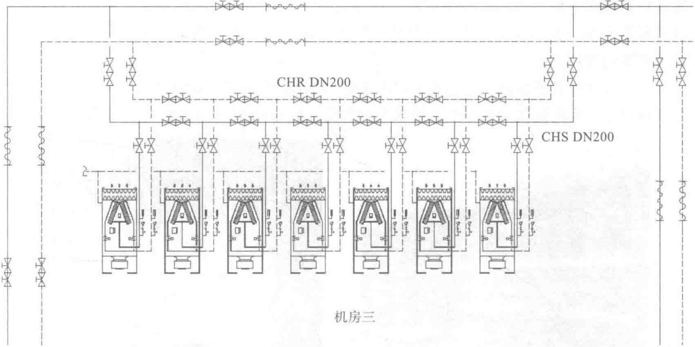
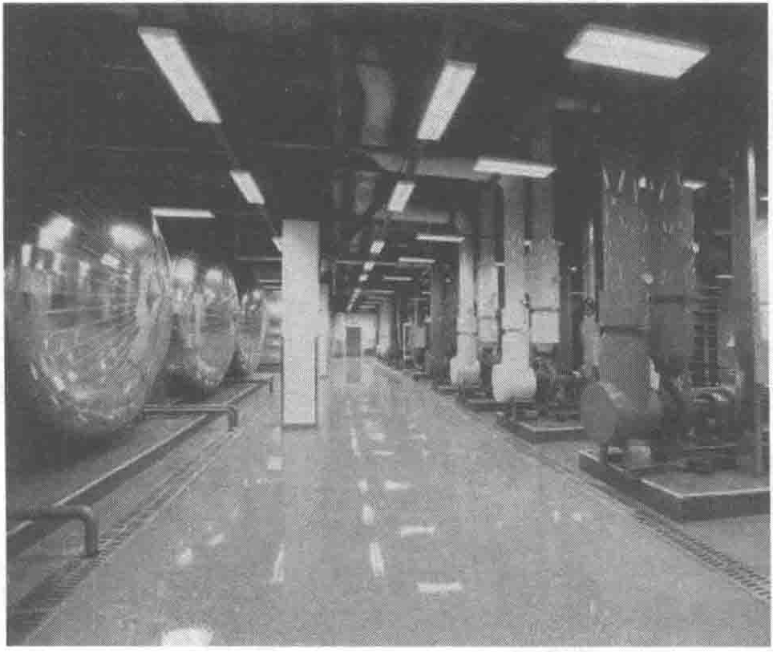

冷水机房内设置4个承压式圆柱形蓄冷罐（见图10-34），材质为压力容器专用钢材，标号为Q345R，在冷水机组停机时可以保证15h不间断制冷。每个蓄冷罐布水器的效果保证80%以上的蓄冷效率；布水器设计的弗劳德数＜1，这样可以保证蓄冷罐在竖直方向上的温度分层；水罐出口雷诺数＜2000，可降低水流对斜温层的干扰。罐体按照蓄冷温度设置保温层，日总热损失率在最热月24h内温升不高于0.2℃。蓄冷罐是“串联”在冷冻水系统中的，可以实现无间断供冷。

冷冻侧采用一次泵变频系统，系统投资小，管路简单。而且冷水机组和水泵之间都是